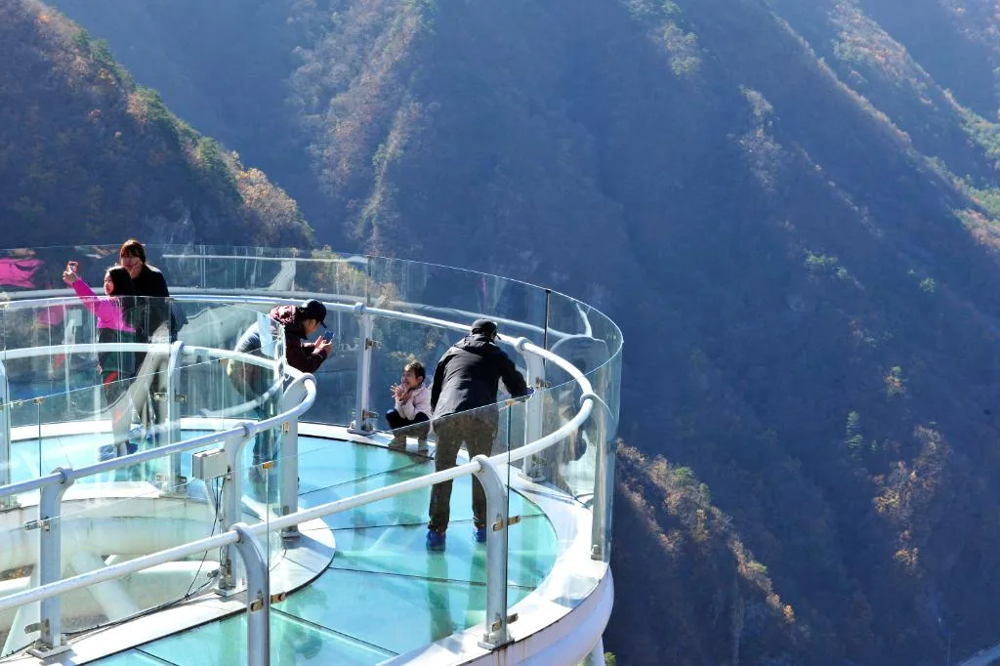
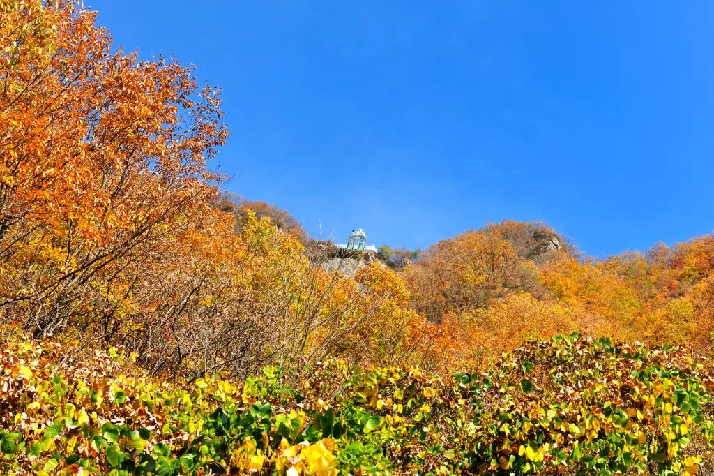
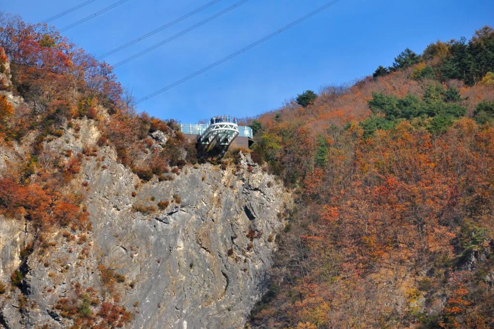
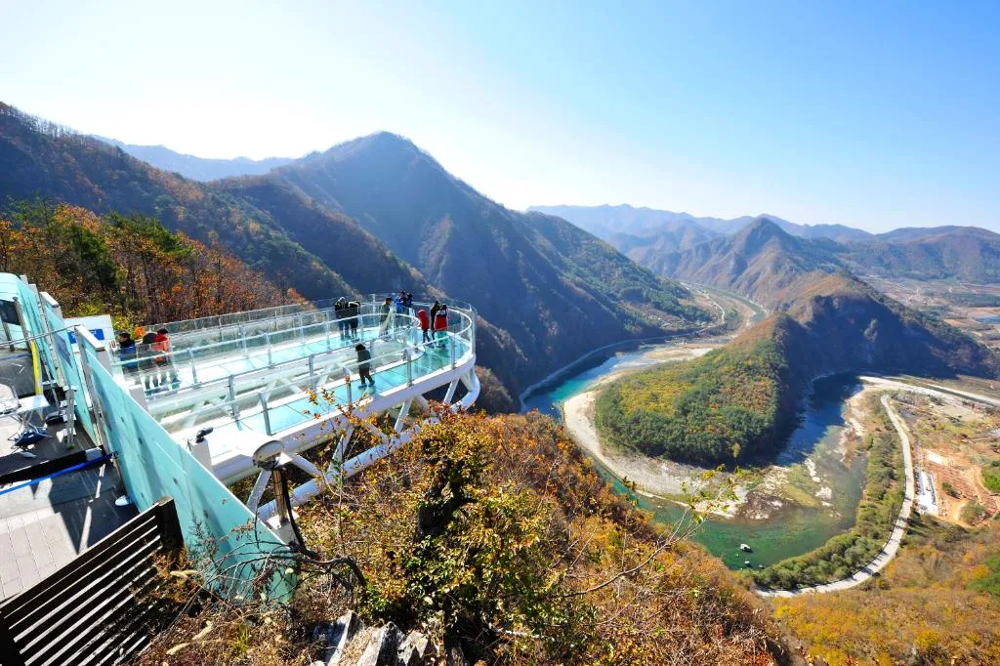
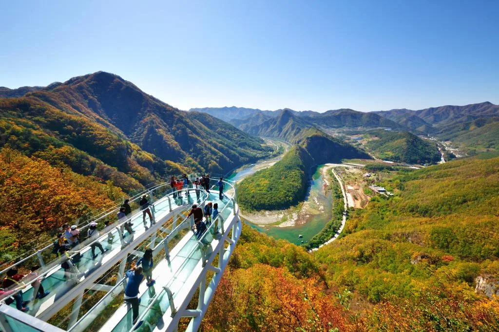

▲ 병방치 스카이워크에서 내려다본 동강. 물길이 크게 휘돌아 나가는 모습이 한반도 지형을 닮았다는 평을 받는다 ⓒ 정선군청
강원 정선읍 외곽, 해발 583m 절벽 끝에는 허공으로 튀어나온 U자형 유리 전망대가 있다. 병방치 스카이워크다. 발아래로 훤히 뚫린 강화유리 바닥에 서면 아찔함과 함께, 동강이 크게 한 바퀴 휘돌아 나가는 물굽이가 한눈에 들어온다. 특히 가을 단풍철에는 산 전체가 붉고 노랗게 물들면서 이 물굽이 풍경이 한 해 중 가장 화려해진다. 이 기사는 병방치 스카이워크의 운영시간·입장료·주차 정보부터 주말 혼잡을 피하는 법, 주변 연계 코스까지 정리했다.
1. 병방치 스카이워크란 — 절벽 끝 유리 전망대

▲ 강화유리 바닥 위에서 인증샷을 남기는 방문객들. 발아래로 협곡이 그대로 내려다보인다 ⓒ 정선군청
정선읍 북실리와 귤암리 사이, 해발 583m 절벽 끝에 조성된 병방치 스카이워크는 2012년 6월 개장했다. 길이 11m의 U자형 강화유리 구조물이 절벽 바깥으로 돌출돼 있어, 마치 허공에 떠 있는 듯한 느낌을 준다. 개장 당시부터 '동양 최대 규모의 스카이워크'로 소개돼 왔는데, 이는 시설 규모를 강조하기 위해 널리 쓰여온 표현으로 이해하면 된다. 바로 아래로는 동강이 흐르고, 강 건너편으로는 한반도 지형을 연상시키는 물굽이와 산줄기가 펼쳐진다.
2. 왜 가을에 가야 할까 — 단풍철 동강 굽이 절경

▲ 진입로 단풍 숲 사이로 보이는 스카이워크 전망대. 절벽 위로 돌출된 구조물이 단풍과 대비를 이룬다 ⓒ 정선군청
병방치 일대는 산세가 험준해 사시사철 경관이 좋은 곳으로 꼽히지만, 단풍철에는 특히 산 전체가 붉고 노란 색으로 물들면서 동강 물굽이와 어우러진 풍경이 절정에 달한다. 강물의 청록빛과 산자락의 단풍색이 대비를 이루는 시기가 방문 적기다. 정선은 강원 내륙 산간 지역이라 단풍이 대체로 10월 중순부터 시작돼 10월 하순에서 11월 초 사이 절정을 이루는 경우가 많다. 다만 해마다 기온에 따라 며칠씩 달라질 수 있으므로 방문 1~2주 전 최근 현지 후기를 확인하는 편이 정확하다.
3. 운영시간·입장료·주차 — 접근 정보

▲ 멀리서 바라본 병방치 스카이워크. 절벽 위로 아슬아슬하게 돌출된 구조가 한눈에 들어온다 ⓒ 정선군청
| 구분 | 내용 |
|---|---|
| 주소 | 강원 정선군 정선읍 병방치길 225 |
| 운영시간 | 하절기 09:00~18:00 / 동절기 10:00~17:00 |
| 휴무 | 동절기 매주 월요일 휴무 (기상 악화 시 임시 휴장 가능) |
| 입장료 | 성인 2,000원 / 청소년(초·중·고) 1,000원 / 6세 이하 무료 (20인 이상 단체 10% 할인) |
| 주차료 | 무료 |
4. 주말 혼잡 피하는 법 — 셔틀버스 활용

▲ 전망대에서 내려다본 동강 물굽이와 강변 도로. 단풍철 주말에는 이 조망을 보려는 방문객으로 붐빈다 ⓒ 정선군청
주차 자체는 무료지만, 전망대 바로 옆 주차장은 공간이 넉넉하지 않다. 주말·공휴일 낮 12시~오후 4시 사이에는 방문객이 몰려 전망대 주차장이 만차가 되는 경우가 잦다. 이 시간대에는 아래쪽 아리힐스 리조트의 넓은 주차장에 차를 세우고, 5분 간격으로 운행되는 셔틀버스를 이용하는 편이 대기 시간을 줄이는 방법이다. 평일이나 이른 오전 시간을 노린다면 전망대 바로 앞 주차장도 무리 없이 이용할 수 있다.
5. 주변 연계 코스 — 짚와이어와 화암동굴

▲ 스카이워크에서 내려다본 동강 물굽이 전경. 강변을 따라 산책로와 캠핑 구역도 조성돼 있다 ⓒ 정선군청
병방치 일대를 운영하는 아리힐스는 스카이워크 외에 짚와이어 시설도 함께 운영하고 있어, 스릴을 더 즐기고 싶다면 함께 이용할 수 있다. 조금 더 멀리 이동한다면 정선군 화암면에 있는 화암동굴도 연계 코스로 꼽힌다. 화암동굴은 천연기념물 제557호로, 옛 금광 갱도를 파던 중 발견된 석회동굴이 공존하는 독특한 구조다. 병방치에서 화암동굴까지는 정선 시내를 가로질러 42번 국도를 타고 이동해야 하며, 지도 경로 기준 실제 도로 거리는 약 20km, 차량으로 30~35분 정도 걸린다. 두 곳 모두 정선 관광의 핵심 축으로 꼽혀 같은 날 일정으로 묶는 여행객이 많다.
6. 방문 전 체크리스트
✅ 정선 병방치 스카이워크, 가기 전 확인할 것
· 운영시간은 하절기 09:00~18:00, 동절기 10:00~17:00 (동절기 매주 월요일 휴무)
· 입장료 성인 2,000원, 주차는 무료
· 단풍 절정은 대체로 10월 하순~11월 초, 방문 전 최신 현지 후기 확인 권장
· 주말·공휴일 낮 12~16시는 아리힐스 주차장 + 셔틀버스 이용이 편리
· 짚와이어, 화암동굴과 묶어 하루 코스로 확장 가능
· 기상 악화(눈·비·강풍) 시 예고 없이 운영 중단될 수 있어 사전 확인 필요
병방치 스카이워크는 짧은 시간에 압도적인 조망을 얻을 수 있는 곳이지만, 주차·혼잡 변수를 미리 알아두지 않으면 대기 시간에 발이 묶이기 쉽다. 운영시간과 셔틀 정보를 확인한 뒤 여유 있게 움직이면, 단풍이 가장 짙어지는 순간의 동강을 놓치지 않을 수 있다.